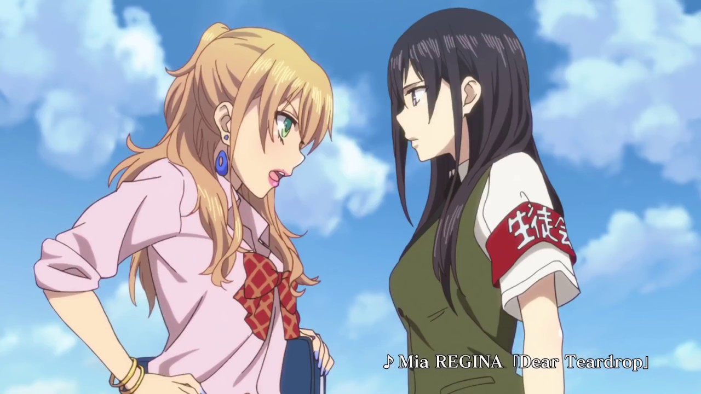
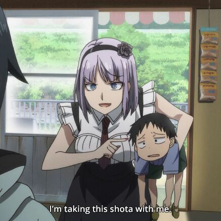

Anime Genre & Sub-Genre's
Sports
Sports anime are shows that cover characters engaging in athletic competition.
Focuses on character and team development, and highlights action-packed moments.
Slice of Life
Stories depicted in real life.
Yōkai
Yōkai are creature in old Japanese stories, such as oni, kappa, or tengu.
The most famous yōkai are Tengu, Oni (Japanese ogre), and Kyubi no Kitsune (a fox with nine tails).
Seinen
For young men over 18 years old.
Action, comedy, drama and even hentai can all be called seinen.
Shōjo
Word meaning "Girl".
Most shōjo characters are female.
Stories mainly focus on love, friendship, and romance.
Yuri

Yuri or shojo-ai are Anime about girls who are in love with other girls.
Also called "S-class" and "Girls Love".
Shotacon

Shota means little boy. Shotacon is someone who likes little boys.
Is a Japanese slang of the phrase Shōtarō complex.
It describes an attraction to young boys around 13 years old or younger.
Ecchi

Means pervert in Japanese.
Ecchi comes from the sound of H in the word hentai.
Full of sexually provocative scenes.